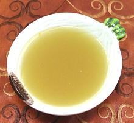

 |
Russian Vegetable StockRussia - Ovoshchonoy Bulyon | ||||
| Makes: Effort: Sched: DoAhead: |
8 cups ** 2-1/4 hr Yes |
Making vegetable stock fell out of favor in Soviet Russia, but with the Soviet Union dissolved, many people are again observing the Eastern Orthodox Great Lent. For details see Comments. | |||
|
|
3/4 1 ------- 12 4-1/2 4-1/2 4-1/2 12 ------- 3 9 ------- 12 5 2 10 ------- |
oz c --- oz oz oz oz oz --- T c --- --- |
Mushrooms dry (1) Water -- Vegetables Onions Carrots Celery & Leaves Leek Parsnips ----------- OIl (2) Water -- Seasonings Parsley sprigs Dill sprigs Bay leaves Peppercorns ----------- |
Make - (2-1/4 hr - 45 min work)
|
uov_vstock1 151213 pttt614 - www.clovegarden.com
©Andrew Grygus - agryg@aaxnet.com - Linking to and
non-commercial use of this page is permitted.